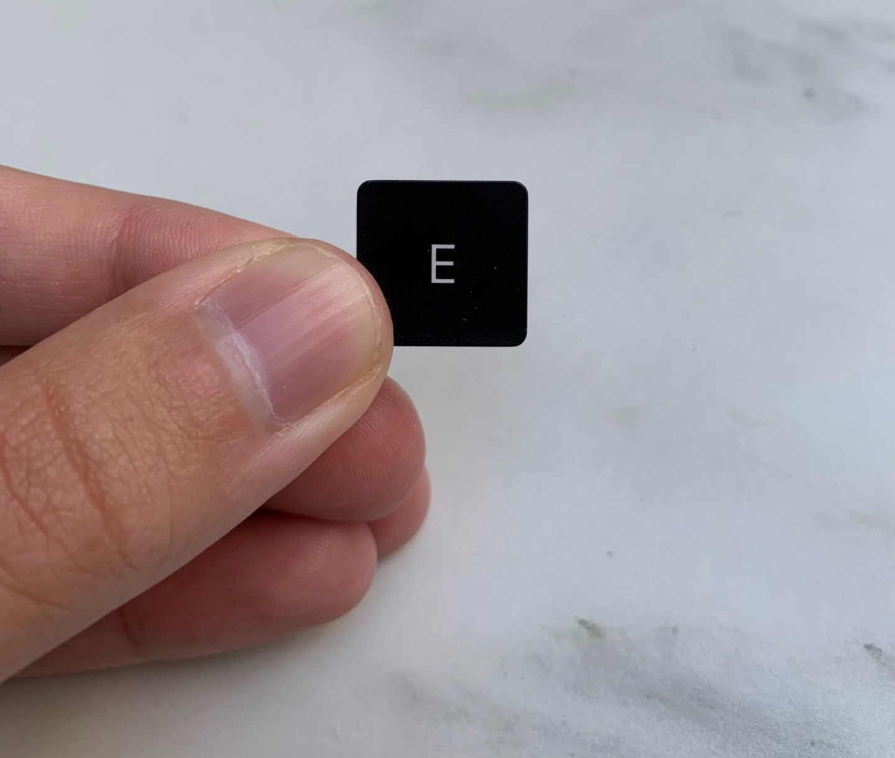

Din guide i tangentdjungeln
Vi har alla alfabetets bokstäver, A - Ö. Till skillnad från konkurrenter som nischat sitt utbud mot enstaka tangenter som R eller F så erbjuder vi sveriges största sortiment av bokstäver - hela jäkla alfabetet!
Köper du idag får du också danska tangenter på köpet så att du kan skriva ord som smörrebröd utan prickar över o:en...
Aj aj aj
Har detta hänt dig också? Vi varnar för att skriva för många ord med tangenten E då det sliter på ditt tangentbord. Undvik överdiven användning av ord som Ek, Ensam, Eko och Elegant. Men självklart finns vi på tangentkungen.se där och hjälper dig när olyckan väl händer. För endast 395kr + frakt skickar vi ut en ny tangent.